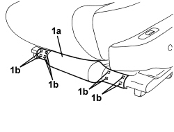

7045A42 GUARD (ONE) FOR FRONT SEAT, LEFT OR RIGHT - R.R.
- Path
- Procedures > 70 FITTINGS > 7045 FRONT SEATS > 7045A FRONT SEAT ASSEMBLY > 7045A42 GUARD (ONE) FOR FRONT SEAT, LEFT OR RIGHT - R.R.
- Kind
- repair procedure (removal / refitting; the operation number is the code)
- Applies to
- all engines; all production periods; only with equipment: Electric seats
- Interactive page
- https://sloeber94.github.io/elrnDB/alfa/159/en/#/939005557
Applies to: all engines; all production periods; only with equipment: Electric seats
 Removing
Removing
 Refitting
Refitting- Raise the seat until it is in the upper end of travel position.
1. Remove front guard (1a) releasing the internal retainers (1b).

Applies to: all engines; all production periods; only with equipment: Electric seats
Refitting
Removing- Check that the front guard is not damaged.
- Position the front guard and do up the inner retainers.
- Lower the seat to the correct height.
Topics that link to this page (6)
- 7045A63 FRONT SEAT GUIDE OUTER GUARD (ONE), LH OR RH - R R
- 7045A66 SLIDING GUIDE (ONE),LEFT OR RIGHT FOR FRONT SEAT - R.R.
- 7045A67 SLIDING GUIDE (ONE), LEFT OR RIGHT FOR FRONT SEAT - R.R WITH SEAT REMOVED
- 7045A86 FRONT SEAT FRAME (ONE), LEFT OR RIGHT, R.R.
- 7045J11 REAR SEAT GUIDES CONNECTION BAR, (ONE) LH OR RH - R R
- 7045J26 FRONT SEAT SLIDE MOTOR, L/H OR R/H - R+R FOLLOWING ELECTRICAL WIRING CHECK